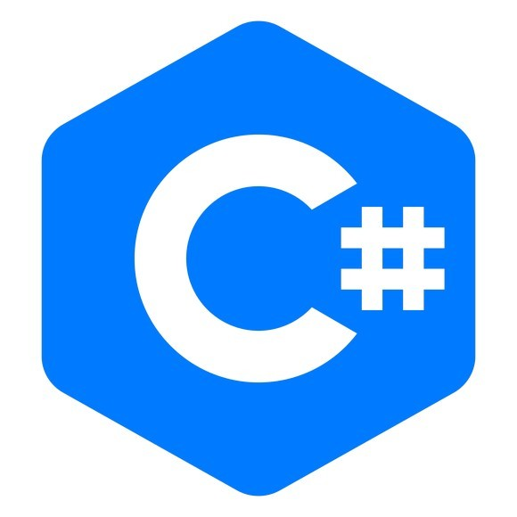

LINGUAGEM PYTHON

Python é uma linguagem de propósito geral, ou seja, pode ser utilizada para as mais diversas aplicações.
É gratuita Open Source e foi projetada tendo como um dos principais objetivos ser de fácil leitura
e utilização.
LINGUAGEM JAVA

Java é uma linguagem de programação amplamente usada para codificar aplicações Web.
Ela tem sido uma escolha popular entre os desenvolvedores há mais de duas décadas, com milhões de aplicações Java em uso hoje.
Java é uma linguagem multiplataforma, orientada a objetos e centrada em rede que pode ser usada como uma plataforma em si.
LINGUAGEM C#
C# é uma linguagem de programação orientada a objetos e orientada a componentes.
C# fornece construções de linguagem para dar suporte diretamente a esses conceitos, tornando C# uma linguagem natural para criação e uso de componentes de software.
LINGUAGEM R

R é uma linguagem de programação estatística e gráfica que vem se especializando na manipulação, análise e visualização de dados, sendo atualmente considerada uma das melhores ferramentas para essa finalidade.